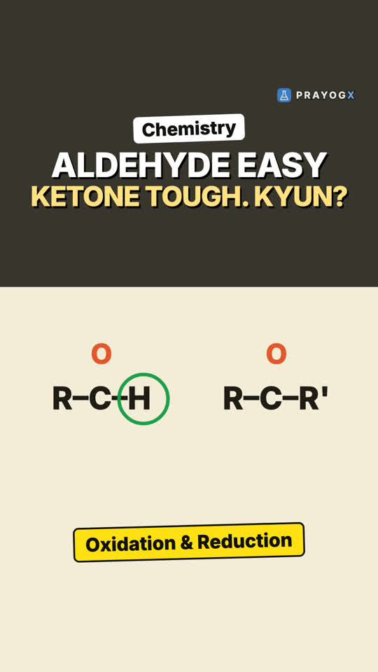

Nucleophilic Addition Reactions: One Carbonyl, Five Pathways
Video not playing? YouTube
Every nucleophilic addition reaction of aldehydes and ketones in one place: HCN, NaHSO₃, Grignard reagents, alcohols, and the addition–elimination of ammonia derivatives, with the product each one gives.
Download the short notesPDF, 250 KB · solved examples, practice set and answer key Download the workbook
PDF, 191 KB · fill in the blanks, true/false, assertion-reason, MCQ, numericals, short answer, match the columns; detailed solutions at the end Up next in this chapter
 Uses of Aldehydes and Ketones: From Formalin to VanillaWhere aldehydes and ketones turn up in daily life: formalin and Bakelite from formaldehyde, acetic acid from acetaldehyde, acetone as a solvent, and vanillin, cinnamaldehyde and benzaldehyde as smells and flavours, each explained from its C=O group.Chemistry
Uses of Aldehydes and Ketones: From Formalin to VanillaWhere aldehydes and ketones turn up in daily life: formalin and Bakelite from formaldehyde, acetic acid from acetaldehyde, acetone as a solvent, and vanillin, cinnamaldehyde and benzaldehyde as smells and flavours, each explained from its C=O group.Chemistry
Key points
- HCN (with a base, so CN⁻ attacks) → cyanohydrin: CN and OH on the same carbon, e.g. CH₃CH(OH)CN.
- NaHSO₃ (HSO₃⁻ attacks through S) → bisulphite addition compound, a crystalline solid. Dilute acid or alkali gives the aldehyde back, so it separates and purifies aldehydes.
- Grignard reagent R–MgX in dry ether, then H₃O⁺ → alcohol with a new C–C bond: HCHO gives 1°, other aldehydes 2°, ketones 3°.
- Alcohols, dry HCl: one ROH → hemiacetal (OH + OR); a second ROH → acetal (OR + OR) + H₂O; ketone + ethylene glycol → cyclic ketal.
- Ammonia derivatives H₂N–Z (acid): addition, then loss of H₂O → C=N–Z (nucleophilic addition–elimination): oxime, hydrazone, phenylhydrazone, semicarbazone, 2,4-DNP hydrazone.
The five pathways
| Reagent (condition) | What attacks the C=O carbon | Product (from CH₃CHO) |
|---|---|---|
| HCN (base) | CN⁻, through C | CH₃CH(OH)CN, a cyanohydrin |
| NaHSO₃ | HSO₃⁻, through S | CH₃CH(OH)SO₃⁻Na⁺, the bisulphite addition compound |
| CH₃MgBr (dry ether), then H₃O⁺ | the CH₃ group (new C–C bond) | CH₃CH(OH)CH₃, propan-2-ol (2°) |
| CH₃OH (1 mol), dry HCl | O of CH₃OH | CH₃CH(OH)OCH₃, a hemiacetal |
| CH₃OH (2 mol), dry HCl | O of CH₃OH, twice; H₂O leaves | CH₃CH(OCH₃)₂, an acetal |
| H₂N–Z (acid) | N of the NH₂; then H₂O leaves | CH₃CH=N–Z |
Pure HCN reacts very slowly; a base turns it into CN⁻, the real nucleophile. For NaHSO₃ the equilibrium lies to the right for most aldehydes and to the left for most ketones, because the two alkyl groups of a ketone crowd the carbon.
Grignard reagents: which alcohol?
| Carbonyl compound | + CH₃MgBr, then H₃O⁺ | Alcohol |
|---|---|---|
| HCHO | CH₃CH₂OH | 1° (ethanol) |
| CH₃CHO | CH₃CH(OH)CH₃ | 2° (propan-2-ol) |
| CH₃COCH₃ | (CH₃)₃COH | 3° (2-methylpropan-2-ol) |
Count the carbon groups on the carbon that carries the OH: one, two or three.
Ammonia derivatives: C=O becomes C=N–Z
| Reagent H₂N–Z | Product |
|---|---|
| NH₂OH, hydroxylamine | oxime, >C=N–OH |
| NH₂NH₂, hydrazine | hydrazone, >C=N–NH₂ |
| C₆H₅NHNH₂, phenylhydrazine | phenylhydrazone, >C=N–NHC₆H₅ |
| NH₂NHCONH₂, semicarbazide | semicarbazone, >C=N–NHCONH₂ |
| 2,4-dinitrophenylhydrazine (2,4-DNP) | 2,4-DNP hydrazone, a yellow-orange precipitate |
The reaction is acid catalysed and reversible; rapid loss of water from the addition product drives it to >C=N–Z. Ammonia or a primary amine gives an imine (a Schiff base with an amine). The mechanism of the first step is on the page for the nucleophilic addition reel.
Try it yourself
Goal: Pick a carbonyl compound and a reagent, predict the product type, then react: the page builds the product, names the attacking species and says whether it is an addition or an addition–elimination.
- Pick a carbonyl compound and see how open and δ+ its carbon is.
- Pick a reagent from one of the five chambers.
- Predict the product type.
- Press React: compare your prediction with the product the chamber builds.
- Try the same reagent with a ketone and with formaldehyde.
Quick quiz
5 questions. Choose an answer for each, then submit to see your score and the explanations.
More from Aldehydes, Ketones and Carboxylic Acids
 Nucleophilic Addition to the Carbonyl GroupMost reactions of aldehydes and ketones begin with one move. How a nucleophile attacks the polar C=O, and why aldehydes react faster than ketones.Chemistry
Nucleophilic Addition to the Carbonyl GroupMost reactions of aldehydes and ketones begin with one move. How a nucleophile attacks the polar C=O, and why aldehydes react faster than ketones.Chemistry
Reducing and Oxidising Aldehydes and KetonesReduction is easy for both aldehydes and ketones, but in oxidation the aldehyde reacts at once and the ketone resists. The reason is one H atom.Chemistry · simulation Aldehyde or Ketone? The Distinguishing TestsTwo colourless compounds, both with C=O. How Tollens', Fehling's and the iodoform test tell an aldehyde from a ketone, and why they work.Chemistry · simulation
Aldehyde or Ketone? The Distinguishing TestsTwo colourless compounds, both with C=O. How Tollens', Fehling's and the iodoform test tell an aldehyde from a ketone, and why they work.Chemistry · simulation Tollens' and Fehling's TestsWarm a clear liquid and a mirror forms in the test tube. How Tollens' and Fehling's tests tell aldehydes from ketones.Chemistry · simulation
Tollens' and Fehling's TestsWarm a clear liquid and a mirror forms in the test tube. How Tollens' and Fehling's tests tell aldehydes from ketones.Chemistry · simulation Aldol Condensation: The Alpha Hydrogen KeyTwo small ethanal molecules join into one bigger molecule. How the alpha hydrogen makes it happen, and which compounds cannot do it.Chemistry · simulation
Aldol Condensation: The Alpha Hydrogen KeyTwo small ethanal molecules join into one bigger molecule. How the alpha hydrogen makes it happen, and which compounds cannot do it.Chemistry · simulation The Cannizzaro ReactionTwo identical aldehyde molecules, two different products. How an aldehyde with no α-hydrogen, in concentrated alkali, is oxidised and reduced in the same reaction.Chemistry · simulation
The Cannizzaro ReactionTwo identical aldehyde molecules, two different products. How an aldehyde with no α-hydrogen, in concentrated alkali, is oxidised and reduced in the same reaction.Chemistry · simulation The Haloform Reaction: Iodoform TestYellow crystals with a hospital smell reveal the CH₃CO group. How the iodoform test works and which compounds pass it.Chemistry · simulation
The Haloform Reaction: Iodoform TestYellow crystals with a hospital smell reveal the CH₃CO group. How the iodoform test works and which compounds pass it.Chemistry · simulation The Carboxyl Group: Structure and NamingWhat –COOH really is: a carbonyl and a hydroxyl on one sp² carbon, joined by resonance that makes the carbon less electrophilic than in aldehydes; and how carboxylic acids get their common and IUPAC names.Chemistry
The Carboxyl Group: Structure and NamingWhat –COOH really is: a carbonyl and a hydroxyl on one sp² carbon, joined by resonance that makes the carbon less electrophilic than in aldehydes; and how carboxylic acids get their common and IUPAC names.Chemistry